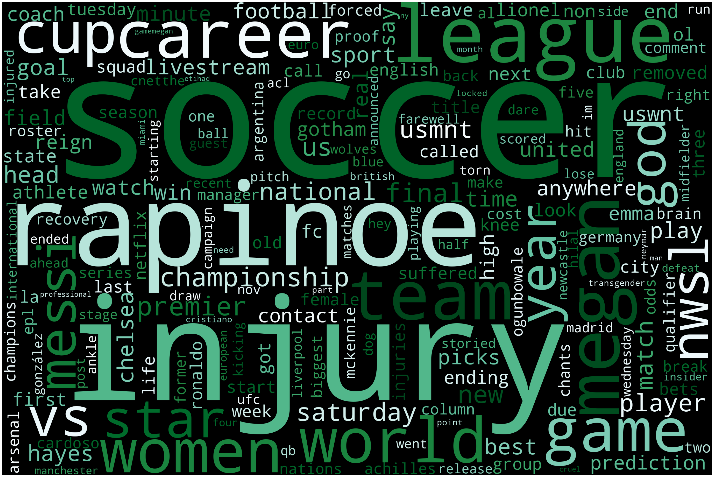

import pandas as pd
file_path = "../../../../data/01-modified-data/cleaned.csv"
df = pd.read_csv(file_path)Data Exploration
In order to explore my data, I plan to use summary statistics, a variety of graph types including a word cloud, bar graphs, line graphs, pie charts, etc. More specifically, I will use Pandas, Matplotlib, and Seaborn. I hope that through this exploration I can learn more about my data and the relationships that exist within it.
Text Data
News API
df.head()| source | author | publish_date | combined | |
|---|---|---|---|---|
| 0 | cnet | adam oram | 2023-09-30T12:02:09Z | man united vs crystal palace livestream: how t... |
| 1 | cnet | adam oram | 2023-09-23T12:00:09Z | man city vs nottingham forest livestream: how ... |
| 2 | huffpost | ap | 2023-09-19T11:28:10Z | spanish soccer star accuses federation of thre... |
| 3 | slate magazine | josh levin and stefan fatsis | 2023-09-18T21:43:37Z | is there any part of aaron rodgers first game ... |
| 4 | deadspin | sam fels | 2023-10-03T11:27:00Z | mls is playing pretty fast and loose with lion... |
Stop Word Removal
all_text = ""
for row in df["combined"]:
all_text = all_text + " " + row
all_text = " ".join(list(df["combined"].values))import nltk
from nltk.corpus import stopwords
nltk.download('stopwords')
words = all_text.split()
stop_words = set(stopwords.words('english'))
filtered_words = [word for word in words if word.lower() not in stop_words]
filtered_text = ' '.join(filtered_words)[nltk_data] Downloading package stopwords to
[nltk_data] /Users/reneedemaio/nltk_data...
[nltk_data] Unzipping corpora/stopwords.zip.Word Cloud
def generate_word_cloud(my_text):
from wordcloud import WordCloud, STOPWORDS
import matplotlib.pyplot as plt
def plot_cloud(wordcloud):
plt.figure(figsize=(40, 30))
plt.imshow(wordcloud)
plt.axis("off");
wordcloud = WordCloud(
width = 3000,
height = 2000,
random_state=1,
background_color='lavender',
colormap= "rainbow",
collocations=False,
stopwords = STOPWORDS).generate(my_text)
plot_cloud(wordcloud)
plt.show()generate_word_cloud(filtered_text)
Bar Chart
from collections import Counter
words = filtered_text.split()
word_freq = Counter(words)import matplotlib.pyplot as plt
frequency_threshold = 10
common_words = [(word, freq) for word, freq in word_freq.items() if freq > frequency_threshold]
common_words.sort(key=lambda x: x[1], reverse=True)
words, frequencies = zip(*common_words)
plt.figure(figsize=(10, 6))
plt.bar(words, frequencies)
plt.xlabel("Words")
plt.ylabel("Frequency")
plt.title("Word Frequency Bar Chart")
plt.xticks(rotation=45)
plt.tight_layout()
plt.show<function matplotlib.pyplot.show(close=None, block=None)>
most_common_words = word_freq.most_common(10)
words, frequencies = zip(*most_common_words)
plt.figure(figsize=(10, 6))
plt.bar(words, frequencies)
plt.xlabel('Words')
plt.ylabel('Frequency')
plt.title('Word Frequency Bar Chart')
plt.xticks(rotation=45)
plt.tight_layout()
plt.show()The data exploration for this data was successful and revealed that the majority of the topics discussed in the news relating to soccer are about specific players or competitions, and less about injuries. While some information of injuries are present, based on the lack of words that could relate to discussion of injury, it appears that these mentions are surface level.
Tabular Data
Basketball Injury Data
import pandas as pd
import numpy as np
import gdown
# the csv url is: https://drive.google.com/file/d/1tdKeSFi492daHWh8Laqb7e3_68o3kaqD/view?usp=share_link
file_id = "1tdKeSFi492daHWh8Laqb7e3_68o3kaqD"
url = f"https://drive.google.com/uc?id={file_id}"
output = "basketball_injuries.csv"
gdown.download(url, output, quiet=False)Downloading...
From: https://drive.google.com/uc?id=1tdKeSFi492daHWh8Laqb7e3_68o3kaqD
To: /Users/reneedemaio/Desktop/git_repo/dsan-5000-project-rennyd123/dsan-website/5000-website/tabs/eda/basketball_injuries.csv
100%|██████████| 1.57M/1.57M [00:00<00:00, 5.38MB/s]'basketball_injuries.csv'file_path = "../../../../data/01-modified-data/basketball_injury_data.csv"
bball_injury_data = pd.read_csv(file_path)
print(bball_injury_data.head()) Date Team Relinquished \
0 2010-10-03 Bulls Carlos Boozer
1 2010-10-06 Pistons Jonas Jerebko
2 2010-10-06 Pistons Terrico White
3 2010-10-08 Blazers Jeff Ayres
4 2010-10-08 Nets Troy Murphy
Notes InjuryStatus
0 fractured bone in right pinky finger (out inde... out indefinitely
1 torn right Achilles tendon (out indefinitely) out indefinitely
2 broken fifth metatarsal in right foot (out ind... out indefinitely
3 torn ACL in right knee (out indefinitely) out indefinitely
4 strained lower back (out indefinitely) out indefinitely Injury Status Bar Chart
import matplotlib.pyplot as plt
injury_counts = bball_injury_data["InjuryStatus"].value_counts()
top_5_injury_counts = injury_counts.head(5)
plt.figure(figsize=(8, 6))
plt.bar(top_5_injury_counts.index, top_5_injury_counts.values, color='pink')
plt.xlabel('Injury Status')
plt.ylabel('Count')
plt.title('Top 5 Injury Status Bar Chart')
plt.show()
Injuries Per Team
team_counts = bball_injury_data["Team"].value_counts()
team_names = bball_injury_data["Team"].unique()
plt.figure(figsize=(8, 8))
plt.pie(team_counts, labels=team_names, autopct='%1.1f%%', startangle=140, shadow=True)
plt.axis("equal")
plt.title("Injury Count per Team")
plt.show()
Injuries by Dates
bball_injury_data['Date'] = pd.to_datetime(bball_injury_data['Date'])
date_counts_2010 = bball_injury_data[bball_injury_data['Date'].dt.year == 2010]
date_counts_2010 = date_counts_2010['Date'].value_counts().sort_index()
plt.figure(figsize=(12, 6))
plt.plot(date_counts_2010.index, date_counts_2010.values, marker='o', linestyle='-', color="green")
plt.xlabel("Date")
plt.ylabel("Injury Count")
plt.title("Injury Counts by Day in 2010")
plt.xticks(rotation=45)
plt.grid(True)
plt.show()The first graph created for this data set reveals that the most common reason given for an athlete’s absence from an NBA game is simply that they did not play. This can be for any variety of reasons from personal reasons, issues with the coach, or injury as well. The next most common is did not dress, which could imply that the athlete is injuries, but doesn’t specifically state that. The next graph shows that most teams in the NBA had relatively similar rates of injury with most of the hovering around 3%. Finally, the last graph shows one interesting spike in injuries in late October of 2010. There is nothing notable in NBA history that day that would cause so many more athletes to be out, so this can be considered an outlier. Outside of that, the average number of injuries across all teams per day hovers between 0-15.
NFL Concussion Data
file_path = "../../../../data/01-modified-data/nfl_concussions.csv"
concussion_data = pd.read_csv(file_path)
print(concussion_data.head()) Player Team Date Opposing Team \
0 Aldrick Robinson Washington Redskins 30/09/2012 Tampa Bay Buccaneers
1 D.J. Fluker San Diego Chargers 22/09/2013 Tennessee Titans
2 Marquise Goodwin Buffalo Bills 28/09/2014 Houston Texans
3 Bryan Stork New England Patriots 12/10/2014 Buffalo Bills
4 Lorenzo Booker Chicago Bears 9/09/2012 Indianapolis Colts
Position Pre-Season Injury? Winning Team? Week of Injury \
0 Wide Receiver No Yes 4
1 Offensive Tackle No No 3
2 Wide Receiver No No 4
3 Center No Yes 6
4 Running Back Yes Yes 1
Season Weeks Injured Games Missed Unknown Injury? \
0 2012/2013 1 1.0 No
1 2013/2014 1 1.0 No
2 2014/2015 1 1.0 No
3 2014/2015 1 1.0 No
4 2012/2013 0 NaN No
Reported Injury Type Total Snaps Play Time After Injury \
0 Head 0 14 downs
1 Concussion 0 78 downs
2 Concussion 0 25 downs
3 Head 0 82 downs
4 Head 0 Did not return from injury
Average Playtime Before Injury
0 37.00 downs
1 73.50 downs
2 17.50 downs
3 41.50 downs
4 NaN Injury Count by Team
injuries_by_team = concussion_data['Team'].value_counts()
plt.figure(figsize=(15, 6))
plt.bar(injuries_by_team.index, injuries_by_team.values, color="skyblue")
plt.xlabel("Team Name")
plt.ylabel("Injury Count")
plt.title("Injury Count by Team")
plt.xticks(rotation=60)
plt.show()
Type of Injury
injury_type = concussion_data["Reported Injury Type"].value_counts()
injury_name = injury_type.index
pastel_colors = ['#FF9999', '#66B2FF', '#99FF99', '#FFCC99', '#c2c2f0', '#ffb3e6', '#c2f0c2']
plt.figure(figsize=(8, 8))
plt.pie(injury_type, labels=injury_name, autopct='%1.1f%%', startangle=140, shadow=False, colors=pastel_colors)
plt.axis("equal")
plt.title("Injury Count by Type of Injury")
plt.legend(injury_name, title="Injury Types", loc="best")
plt.show()Injuries by Position
injuries_by_pos = concussion_data['Position'].value_counts()
plt.figure(figsize=(15, 6))
plt.bar(injuries_by_pos.index, injuries_by_pos.values, color="orange")
plt.xlabel("Position")
plt.ylabel("Injury Count")
plt.title("Injury Count by Position")
plt.xticks(rotation=60)
plt.show()
Correlation Between Week of Injury and Total Snaps
import numpy as np
import pandas as pd
import seaborn as sns
import matplotlib.pyplot as plt
subset = ["Week of Injury", "Total Snaps"]
concussion_data_subset = concussion_data[subset]
corr_matrix = concussion_data_subset.corr()
sns.heatmap(corr_matrix,
annot=True,
cmap="coolwarm")
plt.title("Correlation Map between Week of Injury and Total Snaps")
plt.show()
The graphs made from the NFL concussion data reveal that the Cincinatti Bengals and the Cleveland Browns had the most concussions on their team. The majority of head injuries are concussions (81.7%), but there are also a fair share of non-concussion head injuries (18.0%). Next, the position that sees the most amount of concussion injuries is cornerback, closely followed by wide receiver and safety. Finally, there was a 12% positive correlation between the week of injury and the total number of snaps a player had.
NFL Game Injury Data
file_path = "../../../../data/01-modified-data/nfl_injuries.csv"
nfl_injuries = pd.read_csv(file_path)
print(nfl_injuries.head()) PlayerKey BodyPart RosterPosition StadiumType FieldType \
0 39873 Knee Linebacker indoor Synthetic
1 39873 Knee Linebacker outdoor Natural
2 39873 Knee Linebacker indoor Synthetic
3 39873 Knee Linebacker retractable roof Synthetic
4 39873 Knee Linebacker outdoor Natural
Temperature Weather
0 85 Mostly Cloudy
1 82 Sunny
2 84 Cloudy
3 78 Partly Cloudy
4 80 Cloudy Injury Count by Stadium Type
stadium_type = nfl_injuries["StadiumType"].value_counts()
colors = plt.cm.viridis(np.linspace(0, 1, len(stadium_type)))
plt.figure(figsize=(12,6))
plt.bar(stadium_type.index, stadium_type.values, color=colors)
plt.xlabel("Stadium Type")
plt.ylabel("Injury Count")
plt.title("Injury Count by Stadium Types")
plt.xticks(rotation = 60)
plt.show()
Injury Count by Body Part Injured
import seaborn as sns
injury_frequency = nfl_injuries["BodyPart"].value_counts()
injury_place = nfl_injuries["BodyPart"].unique()
print(injury_frequency)
pastel_colors = ['#FF9999', '#66B2FF', '#99FF99', '#FFCC99', '#c2c2f0', '#ffb3e6', '#c2f0c2']
plt.figure(figsize=(8, 8))
plt.pie(injury_frequency, labels=injury_place, autopct='%1.1f%%', startangle=140, shadow=False, colors=pastel_colors)
plt.axis("equal")
plt.title("Injury Count by Type of Injury")
plt.show()BodyPart
Knee 825
Ankle 720
Toes 144
Foot 96
Heel 18
Name: count, dtype: int64
Injury Count vs Temperature
nfl_injuries["Temperature"] = pd.to_numeric(nfl_injuries["Temperature"], errors='coerce')
nfl_injuries = nfl_injuries[nfl_injuries["Temperature"] >= 0]
nfl_injuries = nfl_injuries.dropna(subset=["Temperature"])
temperature_counts = nfl_injuries["Temperature"].value_counts()
plt.figure(figsize=(12, 6))
plt.plot(temperature_counts.values, temperature_counts.index, marker='o', linestyle='-', color="green")
plt.xlabel("Temperature")
plt.ylabel("Injury Count")
plt.title("Injury Counts by Temperature")
plt.xticks(rotation=45)
plt.show()
This dataset reveals that the majority of NFL injuries occur in stadiums that are outdoors. Most of the injuries are knee or ankle injuires which makese sense due to the nature of American Football. Finally, there doesn’t seem to be a huge correlation between temperature and number of injuries. Spikes in injuries occur during many points in the year.
Injury Prevention Data Soccer
file_path = "../../../../data/01-modified-data/injury_prevention_data_soccer.csv"
injury_prevention = pd.read_csv(file_path)
print(injury_prevention.head()) ID Age Height Mass Team Position Years of Football Experience \
0 146 19 173.0 67.6 1 3 1
1 155 22 179.5 71.0 1 3 1
2 160 22 175.5 71.8 1 3 1
3 164 23 190.0 80.5 1 4 1
4 145 19 173.5 68.7 1 3 1
Previous Injuries Number of Injuries Ankle Injuries ... \
0 yes 6 yes ...
1 yes 2 no ...
2 yes 7 yes ...
3 yes 1 no ...
4 yes 2 yes ...
Importance Injury Prevention Knowledgeability \
0 2 1
1 1 1
2 1 1
3 1 1
4 1 2
Prevention Measure Stretching Prevention Measure Warm Up \
0 yes no
1 yes yes
2 yes no
3 yes yes
4 yes yes
Prevention Measure Specific Strength Exercises \
0 yes
1 no
2 no
3 yes
4 no
Prevention Measure Bracing Prevention Measure Taping \
0 no no
1 no no
2 no no
3 no no
4 no yes
Prevention Measure Shoe Insoles Prevention Measure Face Masks \
0 no no
1 no no
2 yes no
3 no no
4 no no
Prevention Measure Medical Corset
0 no
1 no
2 no
3 no
4 no
[5 rows x 41 columns]Summary Statistics on Personal Information
injury_prevention.columns
print(injury_prevention.dtypes)ID int64
Age int64
Height float64
Mass float64
Team int64
Position int64
Years of Football Experience int64
Previous Injuries object
Number of Injuries int64
Ankle Injuries object
Number of Ankle Injuries int64
Severe_Ankle_Injuries object
Noncontact_Ankle_Injuries object
Knee Injuries object
Number of Knee Injuries int64
Severe_Knee_Injuries object
Noncontact_Knee_Injuries object
Thigh_Injuries object
Number of Thigh Injuries int64
Severe_Thigh_Injuries object
Noncontact_Thigh_Injuries object
Risk Factor Condition object
Risk Factor Coordination object
Risk Factor Muscle Impairments object
Risk Factor Fatigue object
Risk Factor Previous Injury object
Risk Factor Attentiveness object
Risk Factor Other Player object
Risk Factor Equipment object
Risk Factor Climatic Condition object
Risk Factor Diet object
Importance Injury Prevention int64
Knowledgeability int64
Prevention Measure Stretching object
Prevention Measure Warm Up object
Prevention Measure Specific Strength Exercises object
Prevention Measure Bracing object
Prevention Measure Taping object
Prevention Measure Shoe Insoles object
Prevention Measure Face Masks object
Prevention Measure Medical Corset object
dtype: objectinjury_prevention["Height"] = injury_prevention["Height"].astype(int)
injury_prevention["Mass"] = injury_prevention["Mass"].astype(int)print(injury_prevention.dtypes)ID int64
Age int64
Height int64
Mass int64
Team int64
Position int64
Years of Football Experience int64
Previous Injuries object
Number of Injuries int64
Ankle Injuries object
Number of Ankle Injuries int64
Severe_Ankle_Injuries object
Noncontact_Ankle_Injuries object
Knee Injuries object
Number of Knee Injuries int64
Severe_Knee_Injuries object
Noncontact_Knee_Injuries object
Thigh_Injuries object
Number of Thigh Injuries int64
Severe_Thigh_Injuries object
Noncontact_Thigh_Injuries object
Risk Factor Condition object
Risk Factor Coordination object
Risk Factor Muscle Impairments object
Risk Factor Fatigue object
Risk Factor Previous Injury object
Risk Factor Attentiveness object
Risk Factor Other Player object
Risk Factor Equipment object
Risk Factor Climatic Condition object
Risk Factor Diet object
Importance Injury Prevention int64
Knowledgeability int64
Prevention Measure Stretching object
Prevention Measure Warm Up object
Prevention Measure Specific Strength Exercises object
Prevention Measure Bracing object
Prevention Measure Taping object
Prevention Measure Shoe Insoles object
Prevention Measure Face Masks object
Prevention Measure Medical Corset object
dtype: objectnumerical_columns = injury_prevention.select_dtypes(include='int64')
numerical_columns = injury_prevention.drop(columns="ID")
numerical_columns.describe()| Age | Height | Mass | Team | Position | Years of Football Experience | Number of Injuries | Number of Ankle Injuries | Number of Knee Injuries | Number of Thigh Injuries | Importance Injury Prevention | Knowledgeability | |
|---|---|---|---|---|---|---|---|---|---|---|---|---|
| count | 139.000000 | 139.000000 | 139.000000 | 139.000000 | 139.000000 | 139.000000 | 139.000000 | 139.000000 | 139.000000 | 139.000000 | 139.000000 | 139.000000 |
| mean | 17.597122 | 177.043165 | 68.417266 | 3.690647 | 2.546763 | 1.733813 | 1.906475 | 0.683453 | 0.517986 | 0.726619 | 1.345324 | 0.827338 |
| std | 4.601070 | 9.416198 | 11.781156 | 1.825142 | 0.853153 | 0.913470 | 1.614661 | 0.932784 | 0.684746 | 0.778383 | 0.586221 | 0.415777 |
| min | 13.000000 | 141.000000 | 31.000000 | 1.000000 | 1.000000 | 0.000000 | 0.000000 | 0.000000 | 0.000000 | 0.000000 | 0.000000 | 0.000000 |
| 25% | 14.000000 | 172.500000 | 61.000000 | 2.000000 | 2.000000 | 1.000000 | 1.000000 | 0.000000 | 0.000000 | 0.000000 | 1.000000 | 1.000000 |
| 50% | 16.000000 | 178.000000 | 70.000000 | 4.000000 | 3.000000 | 2.000000 | 2.000000 | 0.000000 | 0.000000 | 1.000000 | 1.000000 | 1.000000 |
| 75% | 19.000000 | 184.000000 | 76.000000 | 5.500000 | 3.000000 | 2.000000 | 2.000000 | 1.000000 | 1.000000 | 1.000000 | 2.000000 | 1.000000 |
| max | 35.000000 | 196.000000 | 101.000000 | 6.000000 | 4.000000 | 4.000000 | 10.000000 | 4.000000 | 3.000000 | 3.000000 | 4.000000 | 2.000000 |
object_columns = injury_prevention.select_dtypes(include='object')
for column in object_columns:
plt.figure(figsize=(4, 4))
sns.countplot(data=injury_prevention, x=column, order=['yes', 'no'], palette=['pink', 'lightblue'])
plt.title(f'{column}')
plt.show()


This set of graphs show counts of how many athletes used each prevention method, how many athletes had each time of injury, and what risk factors are present.
Sports Injury Data
file_path = "../../../../data/01-modified-data/sports_injury_data.csv"
sports_injuries = pd.read_csv(file_path)
print(sports_injuries.head()) Sport, activity or equipment Injuries (1) Younger than 5 5 to 14 \
0 Exercise, exercise equipment 445,642 6,662 36,769
1 Bicycles and accessories 405,411 13,297 91,089
2 Basketball 313,924 1,216 109,696
3 Football 265,747 581 145,499
4 ATV's, mopeds, minibikes, etc. 242,347 3,688 42,069
15 to 24 25 to 64 65 and older
0 91,013 229,640 81,558
1 50,863 195,030 55,132
2 143,773 57,413 1,825
3 100,760 18,527 381
4 61,065 122,941 12,584 sports_injuries_subset = sports_injuries[['Injuries (1)', 'Younger than 5',
'5 to 14', '15 to 24', '25 to 64', '65 and older']]
activity_type = sports_injuries["Sport, activity or equipment"]sports_injuries.dtypesSport, activity or equipment object
Injuries (1) object
Younger than 5 object
5 to 14 object
15 to 24 object
25 to 64 object
65 and older object
dtype: objectsports_injuries["Injuries (1)"] = sports_injuries["Injuries (1)"].str.replace(',', '').astype(float)
sports_injuries["Younger than 5"] = sports_injuries["Younger than 5"].str.replace(',', '').astype(float)
sports_injuries["5 to 14"] = sports_injuries["5 to 14"].str.replace(',', '').astype(float)
sports_injuries["15 to 24"] = sports_injuries["15 to 24"].str.replace(',', '').astype(float)
sports_injuries["25 to 64"] = sports_injuries["25 to 64"].str.replace(',', '').astype(float)
sports_injuries["65 and older"] = sports_injuries["65 and older"].str.replace(',', '').astype(float)print(sports_injuries.head())
print(sports_injuries.dtypes) Sport, activity or equipment Injuries (1) Younger than 5 5 to 14 \
0 Exercise, exercise equipment 445642.0 6662.0 36769.0
1 Bicycles and accessories 405411.0 13297.0 91089.0
2 Basketball 313924.0 1216.0 109696.0
3 Football 265747.0 581.0 145499.0
4 ATV's, mopeds, minibikes, etc. 242347.0 3688.0 42069.0
15 to 24 25 to 64 65 and older
0 91013.0 229640.0 81558.0
1 50863.0 195030.0 55132.0
2 143773.0 57413.0 1825.0
3 100760.0 18527.0 381.0
4 61065.0 122941.0 12584.0
Sport, activity or equipment object
Injuries (1) float64
Younger than 5 float64
5 to 14 float64
15 to 24 float64
25 to 64 float64
65 and older float64
dtype: objectsubsetted_sports_injuries = sports_injuries.head(5)
melted_df = pd.melt(subsetted_sports_injuries, id_vars=['Sport, activity or equipment'], var_name='Age group', value_name='Injuries')
plt.figure(figsize=(12, 6))
sns.barplot(data=melted_df, x='Sport, activity or equipment', y='Injuries', hue='Age group')
plt.title('Injuries by Age Group for Different Activities')
plt.xlabel('Sport, activity or equipment')
plt.xticks(rotation=45)
plt.show()
subsetted_sports_injuries = sports_injuries.tail(5)
melted_df = pd.melt(subsetted_sports_injuries, id_vars=['Sport, activity or equipment'], var_name='Age group', value_name='Injuries')
plt.figure(figsize=(12, 6))
sns.barplot(data=melted_df, x='Sport, activity or equipment', y='Injuries', hue='Age group')
plt.title('Injuries by Age Group for Different Activities')
plt.xlabel('Sport, activity or equipment')
plt.xticks(rotation=45)
plt.show()
This set of graphs shows a count of how many injuries each sport or type of active activity causes by age group.
NBA Player and Team Data
file_path = "../../../../data/01-modified-data/nba_data.csv"
nba = pd.read_csv(file_path)
print(nba.head()) Unnamed: 0 PLAYER_NAME TEAM_ID PLAYER_ID SEASON LEAGUE_ID \
0 1 Royce O'Neale 1610612762 1626220 2019 0
1 2 Bojan Bogdanovic 1610612762 202711 2019 0
2 3 Rudy Gobert 1610612762 203497 2019 0
3 4 Donovan Mitchell 1610612762 1628378 2019 0
4 5 Mike Conley 1610612762 201144 2019 0
MIN_YEAR MAX_YEAR ABBREVIATION NICKNAME ... HEADCOACH \
0 1974 2019 UTA Jazz ... Quin Snyder
1 1974 2019 UTA Jazz ... Quin Snyder
2 1974 2019 UTA Jazz ... Quin Snyder
3 1974 2019 UTA Jazz ... Quin Snyder
4 1974 2019 UTA Jazz ... Quin Snyder
DLEAGUEAFFILIATION SEASON_ID STANDINGSDATE CONFERENCE TEAM G W L \
0 Salt Lake City Stars 22022 2022-12-22 West Utah 35 19 16
1 Salt Lake City Stars 22022 2022-12-22 West Utah 35 19 16
2 Salt Lake City Stars 22022 2022-12-22 West Utah 35 19 16
3 Salt Lake City Stars 22022 2022-12-22 West Utah 35 19 16
4 Salt Lake City Stars 22022 2022-12-22 West Utah 35 19 16
W_PCT
0 0.543
1 0.543
2 0.543
3 0.543
4 0.543
[5 rows x 26 columns]nba.columnsIndex(['Unnamed: 0', 'PLAYER_NAME', 'TEAM_ID', 'PLAYER_ID', 'SEASON',
'LEAGUE_ID', 'MIN_YEAR', 'MAX_YEAR', 'ABBREVIATION', 'NICKNAME',
'YEARFOUNDED', 'CITY', 'ARENA', 'ARENACAPACITY', 'OWNER',
'GENERALMANAGER', 'HEADCOACH', 'DLEAGUEAFFILIATION', 'SEASON_ID',
'STANDINGSDATE', 'CONFERENCE', 'TEAM', 'G', 'W', 'L', 'W_PCT'],
dtype='object')Win Percentage by Team
team = nba["TEAM"]
win_pct = nba["W_PCT"]
plt.figure(figsize=(12, 6))
plt.bar(team, win_pct)
plt.title('2019 Win Percentage by Team in the NBA')
plt.xlabel('Team')
plt.ylabel('Win Percentage')
plt.xticks(rotation=45)
plt.show()
Wins vs Arena Capacity
heatmap_data = nba.pivot_table(index='ARENACAPACITY', values='W_PCT', aggfunc='mean')
plt.figure(figsize=(10, 8))
sns.heatmap(heatmap_data, cmap='YlGnBu', annot=True, fmt='.2f', cbar=True)
plt.title('Heatmap: ARENACAPACITY vs. W_PCT')
plt.xlabel('W_PCT (Win Percentage)')
plt.ylabel('ARENACAPACITY (Arena Capacity)')
plt.show()
Finally, these graphs show two different representations of win percentage in the 2019 NBA season. The first graph shows win percentage by team, and the second shows a correlation between arena capacity and win percentage. It appears that win percentage and arena capacity are not strongly positively correlated.
Hypothesis Refinement
Based off of the exploratory data analysis process, it is necessary that I refine my original hypotheses and identify next steps. Firstly, I think that it is important to continue to further explore that factors can affect an athletes susceptibility to injury to understand confounding variables in sport. That will be involved in my next steps with this project. Secondly, I would refine my hypothesis to include more sport specific hypotheses to create more specific hypotheses for soccer, American football, and basketball. In order to do so, I will need to collect more data.